Karl Hasselström
Jon Åslund
Document was last rebuilt August 21, 2001
Late at night sometime in Februari, Kalle Hasselström and Jon Åslund (that is us, we, the authors) were sitting with a programming assignment due for demonstration at nine the following morning. It was assignment number four in our Syntax Analysis course and we were pretty tired with it. The last assignment, on the other hand, seemed like much more fun, because you were allowed to do pretty much whatever you wanted as long as it involved lexical and syntactical analysis. So instead of finishing the fourth assignment, we started making up some great ideas for the fifth, the kind you only conceive of when you really should be asleep.
A few weeks earlier we had discovered a number of truly fascinating programming languages, such as Java2k1, Sorted!2, Brainfuck3 and Malbolge4, and we wanted to make our own. We have no idea why, but that night we were also thinking about Shakespeare in general, and Shakespearian insults in particular and three hours later we had come up with this amazing idea: the Shakespeare Programming Language, SPL.
This is the documentation of the language and how we made it.
The design goal was to make a language with beautiful source code that resembled Shakespeare plays. There are no fancy data or control structures, just basic arithmetic and gotos. You could say we have combined the expressiveness of BASIC with the user-friendliness of assembly language.
The course was about syntactic analysis, not compiler construction. Thus, we didn't make an SPL compiler, just an SPL to C converter. This proved to be fairly simple, since SPL can be translated directly to C, one statement at a time.
Since we don't want to break with ancient tradition, let's begin with
a simple example: a Hello World program. Though it might seem
otherwise, the sole purpose of this program is to print the
string ``Hello World!''. It resides in the file hello.spl,
and also in appendix  . If you want to run it yourself,
consult section
. If you want to run it yourself,
consult section  .
.
Let's dissect the program and see how it works.
The first line of every SPL program is the title. Or actually, everything up until the first period is the title, whether it's one line, three lines, or half a line. You're generally free to insert space and newlines wherever you want in the code, but we urge you to please indent tastefully.
The title serves only aesthetic purposes. From the parser's point of view, it's a comment.
The next few lines are a list of all characters in the play. Think of them as variables, capable of holding a signed integer value. You must declare every character you intend to use, or the program won't compile.
A declaration consists of a name, followed by a description of the character (which is ignored by the parser). You can't pick just any name, however; you must use a real Shakespeare character name, such as Romeo, Juliet, or the Ghost (Hamlet's deceased father).
The purpose of acts and scenes is to divide the play into smaller parts. A play consists of one or more acts, each act consists of one or more scenes, and each scene consists of lines (where the characters say something) and enter and exit statements, which cause characters to get on and off the stage.
Acts and scenes are numbered with roman numerals. They begin with the word ``Act'' or ``Scene'', then the number, and then a description of what happens in that act or scene. Just as with the title and the character descriptions, these descriptions are ignored by the parser.
Besides being beautiful and descriptive, acts and scenes also serve as labels, which can be jumped to using goto statements. There are no gotos in the Hello World program, however, so we'll talk about that later.
To be able to speak their lines, characters must be on stage. The character they address as ``you'' (or ``thou'' or any other second-person pronoun) must also be on stage. But if there is yet another character on stage, it's not clear which one is intended. This is frowned upon by the parser.
Enter Enter and Exit5. These directives cause characters to get on and off stage. ``Enter'' is followed by a list of one or more characters. ``Exit'' is followed by exactly one character. The plural of Exit is ``Exeunt'', which is followed by a list of at least two characters - or none, in which case everyone leaves.
An Enter directive given to a character already on stage, or the other way around, will cause a runtime error.
A line consists of the name of a character, a colon, and one or more sentences. In the Hello World program, only two kinds of sentences are used: output, which causes output to the screen, and statements, which cause the second person to assume a certain value.
First, we'll explain how constants (that is, constant numbers, such as 17 and 4711) are expressed.
Any noun is a constant with the value 1 or 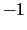, depending on whether it's nice or not. For example, ``flower'' has the value 1 because flowers are nice, but ``pig'' has the value because pigs are dirty (which doesn't prevent most people from eating them). Neutral nouns, such as ``tree'', count as 1 as well.
By prefixing a noun with an adjective, you multiply it by two. Another adjective, and it is multiplied by two again, and so on. That way, you can easily construct any power of two or its negation. From there, it's easy to construct arbitrary integers using basic arithmetic, such as ``the sum of 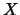 and 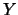'', where and are themselves arbitrary integers.
For example, ``the difference between the square of the difference between my little pony and your big hairy hound and the cube of your sorry little codpiece''. Substituting the simple constants with numbers, we get ``the difference between the square of the difference between 2 and 4 and the cube of -4''. Now, since the difference between 2 and 4 is 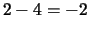, and the cube of 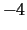 is 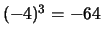, this is equal to ``the difference between the square of 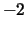 and 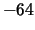''. The square of is 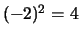, and the difference of 4 and is 60. Thus, ``the difference between the square of the difference between my little pony and your big hairy hound and the cube of your sorry little codpiece'' means 60.
As you see, this way of writing constants gives you much more poetic freedom than in other programming languages.
Now, how do we use those numbers? Well, just have a look at the two statements ``You lying stupid fatherless big smelly half-witted coward!'' and ``You are as stupid as the difference between a handsome rich brave hero and thyself!''
The first one is simple: A second person pronoun, followed by a number. The effect of this statement is to assign the value of that number (in this case, ) to the character being spoken to. Think ``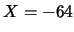''.
The second one is slightly more complicated. For starters, what is the value of ``thyself''? That's not a noun, that's a reflexive pronoun. It's value is the current value of the character being spoken to. So the number in the second statement is 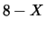, where is the value of the character being spoken to. And just as you might expect from your experience with English, the second statement is just another assignment. Think `` = 8 - ''. Being ``as bas as'', ``as good as'', or as [any adjective] as something else, means being equal to that something.
The other kind of sentence used in the Hello World program is output. There are two different output sentences, ``Open your heart'' and ``Speak your mind''. The first causes the character being spoken to to output her or his value in numerical form, and the other, being more literal, outputs the corresponding letter, digit, or other character, according to the character set being used by your computer.
In this program, we use only the second form. The whole program is a long sequence of constructing a number, writing the corresponding character, constructing the next number, writing the corresponding character, and so on.
Now for a slightly less trivial example: computing prime numbers. In
the file primes.spl, and in appendix  , is a
program that asks the user for a number, then prints all primes less
than or equal to that number.
, is a
program that asks the user for a number, then prints all primes less
than or equal to that number.
There are three things in this program that we havn't seen before: input, gotos, and conditional statements.
The input statements work just like the output statements, except that they read instead of write. To read a number, as in this program, use the sentence ``Listen to your heart.'' To read a character, use ``Open your mind.'' The value will be assigned to the character being spoken to, as usual.
A sentence like ``Let us return to scene III'' means simply ``goto scene III''. Instead of ``let us'', you may use ``we shall'' or ``we must'', and instead of ``return to'', you may use ``proceed to''. If you specify a scene, it refers to that scene in the current act. There is no way to refer to a specific scene in another act - you have to settle for jumping to the act itself.
Conditional statements come in two easy steps, as illustrated by the following code fragment:
Juliet: Am I better than you? Hamlet: If so, let us proceed to scene III.
First, someone voices a question. This is some sort of comparison, which will be either true or false. But more on that later.
Then comes, at some later point, a conditional statement. This is constructed by putting either ``if so'' (or ``if not'') and a comma in front of any sentence - that sentence is only executed if the answer to the last question was yes (or no).
This is pretty much like how you would do conditional jumps and things in many assembly languages.
Comparisons are constructed the way you would expect: ``is as good as '' tests for equality, with and being arbitrary values. You may substitute ``good'' with any adjective. ``is better than '' tests if 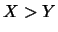. This works for any positive comparative. If you want to test whether 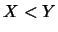, use a negative comparative, such as ``worse''.
If you want to invert the test, say ``not as good as'' or ``not better than''.
One might almost say that the language described this far ought to be able to do anything that can be done with other programming languages, albeit more flowery, were it not for the fact that the storage capacity is severely limited. There are only so many Shakespeare characters (some one hundred of them are recognized by the parser), and each of them can only store an integer of finite size. Thus the storage capacity is finite, and it follows that SPL can only handle problems of finite size.
Realizing this, we added stacks to the language. We'll describe them
in just a minute; but first, have a look at how they can be used. The
program in the file reverse.spl - which can also be found in
appendix  - reads any number of characters, and then
spits them out again in reverse order.
- reads any number of characters, and then
spits them out again in reverse order.
Characters in the Shakespeare Programming Language are not simple-minded, limited to remember just one number. Like normal people, they can actually remember several. In accord with modern, highly experimental psychological research, this is implemented with stacks.
Every character can push integers onto their memory, and pop them out again at a later time. Pushing is done like this:
Lady Macbeth: Remember me.
This of course causes whoever Lady Macbeth is speaking to to push the value of Lady Macbeth onto his or her stack. Popping is even simpler:
Lady Macbeth: Recall your imminent death!
The only significant word here is ``recall''; everything that follows is artistic fluff. This piece of code causes whoever Lady Macbeth is speaking to to pop an integer from his or her stack and assume that value for him- or herself.
Trying to pop when the stack is empty is a sure sign that the author has not yet perfected her storytelling skills, and will severly disappoint the runtime system.
There is no SPL compiler. We do encourage you to write one, but at present there is only a translator, which translates SPL to C. The C file is then compiled and linked the usual way.
The entire process is visualized in figure  . There
are two things to note. First, spl2c reads from stdin
and writes to stdout, so to accomplish what you see in the
figure, you would write spl2c < hello.spl > hello.c. Second,
the object file must be linked with the library libspl.a, which
contains such stuff as dreams are made on.
. There
are two things to note. First, spl2c reads from stdin
and writes to stdout, so to accomplish what you see in the
figure, you would write spl2c < hello.spl > hello.c. Second,
the object file must be linked with the library libspl.a, which
contains such stuff as dreams are made on.
The SPL to C translator was built using Flex6 and Bison7. Flex creates a lexical analyzer, which eats source code and spits out tokens. Bison creates a parser that builds a parse tree out of these tokens, whereupon it is converted to C code.
We did not write the lexical analyzer specification by hand, since it contains a large number of very simple, very similar statements. Instead, we wrote a small program to do it for us.
The lexical analyzer and the parser are linked into the same executable, along with some string manipulation utilities that the parser uses a lot.
Last, we also build a library containing all the functions used in the C files generated by the translator.
Figure  depicts the build process. makescanner
is the program that creates the lexical analyzer specification
(scanner.l). It reads a number of word list files, which list
all SPL certified nouns, adjectives, character names, and so on.
depicts the build process. makescanner
is the program that creates the lexical analyzer specification
(scanner.l). It reads a number of word list files, which list
all SPL certified nouns, adjectives, character names, and so on.
(This is the contents of the file hello.spl.)
The Infamous Hello World Program.
Romeo, a young man with a remarkable patience.
Juliet, a likewise young woman of remarkable grace.
Ophelia, a remarkable woman much in dispute with Hamlet.
Hamlet, the flatterer of Andersen Insulting A/S.
Act I: Hamlet's insults and flattery.
Scene I: The insulting of Romeo.
[Enter Hamlet and Romeo]
Hamlet:
You lying stupid fatherless big smelly half-witted coward!
You are as stupid as the difference between a handsome rich brave
hero and thyself! Speak your mind!
You are as brave as the sum of your fat little stuffed misused dusty
old rotten codpiece and a beautiful fair warm peaceful sunny summer's
day. You are as healthy as the difference between the sum of the
sweetest reddest rose and my father and yourself! Speak your mind!
You are as cowardly as the sum of yourself and the difference
between a big mighty proud kingdom and a horse. Speak your mind.
Speak your mind!
[Exit Romeo]
Scene II: The praising of Juliet.
[Enter Juliet]
Hamlet:
Thou art as sweet as the sum of the sum of Romeo and his horse and his
black cat! Speak thy mind!
[Exit Juliet]
Scene III: The praising of Ophelia.
[Enter Ophelia]
Hamlet:
Thou art as lovely as the product of a large rural town and my amazing
bottomless embroidered purse. Speak thy mind!
Thou art as loving as the product of the bluest clearest sweetest sky
and the sum of a squirrel and a white horse. Thou art as beautiful as
the difference between Juliet and thyself. Speak thy mind!
[Exeunt Ophelia and Hamlet]
Act II: Behind Hamlet's back.
Scene I: Romeo and Juliet's conversation.
[Enter Romeo and Juliet]
Romeo:
Speak your mind. You are as worried as the sum of yourself and the
difference between my small smooth hamster and my nose. Speak your
mind!
Juliet:
Speak YOUR mind! You are as bad as Hamlet! You are as small as the
difference between the square of the difference between my little pony
and your big hairy hound and the cube of your sorry little
codpiece. Speak your mind!
[Exit Romeo]
Scene II: Juliet and Ophelia's conversation.
[Enter Ophelia]
Juliet:
Thou art as good as the quotient between Romeo and the sum of a small
furry animal and a leech. Speak your mind!
Ophelia:
Thou art as disgusting as the quotient between Romeo and twice the
difference between a mistletoe and an oozing infected blister! Speak
your mind!
[Exeunt]
(This is the contents of the file primes.spl.)
Prime Number Computation in Copenhagen.
Romeo, a young man of Verona.
Juliet, a young woman.
Hamlet, a temporary variable from Denmark.
The Ghost, a limiting factor (and by a remarkable coincidence also
Hamlet's father).
Act I: Interview with the other side.
Scene I: At the last hour before dawn.
[Enter the Ghost and Juliet]
The Ghost:
You pretty little warm thing! Thou art as prompt as the difference
between the square of thyself and your golden hair. Speak your mind.
Juliet:
Listen to your heart!
[Exit the Ghost]
[Enter Romeo]
Juliet:
Thou art as sweet as a sunny summer's day!
Act II: Determining divisibility.
Scene I: A private conversation.
Juliet:
Art thou more cunning than the Ghost?
Romeo:
If so, let us proceed to scene V.
[Exit Romeo]
[Enter Hamlet]
Juliet:
You are as villainous as the square root of Romeo!
Hamlet:
You are as lovely as a red rose.
Scene II: Questions and the consequences thereof.
Juliet:
Am I better than you?
Hamlet:
If so, let us proceed to scene III.
Juliet:
Is the remainder of the quotient between Romeo and me as good as
nothing?
Hamlet:
If so, let us proceed to scene IV.
Thou art as bold as the sum of thyself and a roman.
Juliet:
Let us return to scene II.
Scene III: Romeo must die!
[Exit Hamlet]
[Enter Romeo]
Juliet:
Open your heart.
[Exit Juliet]
[Enter Hamlet]
Romeo:
Thou art as rotten as the difference between nothing and the sum of a
snotty stinking half-witted hog and a small toad!
Speak your mind!
[Exit Romeo]
[Enter Juliet]
Scene IV: One small dog at a time.
[Exit Hamlet]
[Enter Romeo]
Juliet:
Thou art as handsome as the sum of thyself and my chihuahua!
Let us return to scene I.
Scene V: Fin.
[Exeunt]
(This is the contents of the file reverse.spl.)
Outputting Input Reversedly.
Othello, a stacky man.
Lady Macbeth, who pushes him around till he pops.
Act I: The one and only.
Scene I: In the beginning, there was nothing.
[Enter Othello and Lady Macbeth]
Othello:
You are nothing!
Scene II: Pushing to the very end.
Lady Macbeth:
Open your mind! Remember yourself.
Othello:
You are as hard as the sum of yourself and a stone wall. Am I as
horrid as a flirt-gill?
Lady Macbeth:
If not, let us return to scene II. Recall your imminent death!
Othello:
You are as small as the difference between yourself and a hair!
Scene III: Once you pop, you can't stop!
Lady Macbeth:
Recall your unhappy childhood. Speak your mind!
Othello:
You are as vile as the sum of yourself and a toad! Are you better
than nothing?
Lady Macbeth:
If so, let us return to scene III.
Scene IV: The end.
[Exeunt]
In order to make first contact with the authors, you may find the addresses d98-jas@nada.kth.se and d98-kha@nada.kth.seuseful. Mail posted to them will reach Jon and Karl, respectively.
We appreciate any feedback - even if all we get is an extensive collection of four-letter words, at least we know someone loves us.
The Shakespeare Programming Language has its own WikiWikiWeb at http://www.d.kth.se/~d98-kha/shakespeare/. You may find all sorts of fascinating information there, including this document and the spl2c translator, complete with source code!
This document was generated using the LaTeX2HTML translator Version 2K.1beta (1.47)
Copyright © 1993, 1994, 1995, 1996,
Nikos Drakos,
Computer Based Learning Unit, University of Leeds.
Copyright © 1997, 1998, 1999,
Ross Moore,
Mathematics Department, Macquarie University, Sydney.
The command line arguments were:
latex2html -dir shakespeare -no_navigation -split 0 shakespeare.tex
The translation was initiated by Karl Hasselström on 2001-08-21